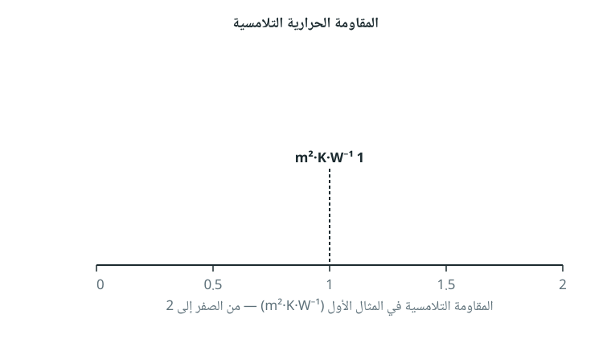

المقاومة الحرارية التلامسية
Thermal contact resistance
المقاومة الحرارية التلامسية هي مقاومة إضافية لانتقال الحرارة عند سطح تلامس بين جسمين صلبين، تنشأ لأن التلامس الفعلي يحدث عند نقاط خشونة محدودة فقط. تُحسب من فرق الحرارة على السطح مقسوماً على كثافة التدفق، وتُخفَّض بالضغط وبالمواد البينية.
حين يتلامس سطحان صلبان، لا يتلامسان على كامل مساحتهما الهندسية، بل عند قمم الخشونة فقط، وتمتلئ الفراغات بينها بهواء أو بوسط آخر أقل توصيلاً. فينشأ انخفاض مفاجئ في الحرارة عند السطح الفاصل. وتُعرَّف المقاومة التلامسية: R_c = ΔT_c/q″ بوحدة m²·K/W، حيث ΔT_c فرق الحرارة على السطح وq″ كثافة التدفق الحراري. مثال: وصلتان نحاسيتان بينهما سطح تلامس، قياس أعطى فرق حرارة 2.50 K عند كثافة تدفق 25 000 W/m²: R_c = 2.50/25 000 = 1.00×10⁻⁴ m²·K/W.
كيف تعمل الظاهرة؟
السطح الحقيقي ليس مستوياً على المستوى الجزيئي، بل فيه نتوءات ووديان بمقياس الميكرومتر. وعند الضغط يتلامس السطحان عند قمم النتوءات فقط، فتمر الحرارة عبر نقاط تلامس صغيرة عالية التوصيل، وعبر فراغات مملوءة بمائع منخفض التوصيل. ولهذا تكون المقاومة الفعلية أكبر بكثير من مقاومة مادة صلبة متصلة. وكلما زاد الضغط تشوهت النتوءات وزادت مساحة التلامس الحقيقية فقلّت المقاومة.
العلاقة بالأرقام
R_c = ΔT_c/q″، وh_c = 1/R_c. مثال: ΔT_c = 2.50 K، q″ = 25 000 W/m² → R_c = 1.00×10⁻⁴ m²·K/W، وh_c = 10 000 W/(m²·K). وللمقارنة، لو كان بين السطحين شريط حراري بسماكة 0.0001 m وتوصيلية 3 W/(m·K) لكانت مقاومته 0.0001/3 = 3.33×10⁻⁵ m²·K/W، أي ثلث مقاومة التلامس الجاف، ولهذا تُستعمل هذه الشرائط.
مفاهيم متقاربة
يُفرَّق بين المقاومة التلامسية ومقاومة الطبقة المتأكسدة: الثانية مادة كيميائية على السطح، والأولى هندسة تلامس. ويُفرَّق بين التلامس الجاف والتلامس المملوء بمادة بينية: الثاني أقل مقاومة عادةً. ويُفرَّق بين المقاومة عند التلامس الأول والمقاومة بعد دورات حرارية: الثانية قد تزيد بسبب التمدد غير المتساوي. وأخيراً يُفرَّد بين المقاومة التلامسية ومقاومة الانتشار: الثانية في الأوساط المائعة، والأولى بين صلبين.
حدود التطبيق
القيمة تعتمد على الضغط ودرجة الحرارة والخشونة والوسط المحيط، فلا تُعتمد قيمة واحدة لكل الظروف. ولا تُستعمل في التلامس الملحوم أو الملصق، حيث لا يوجد سطح فاصل حقيقي. ولا تصف التلامس بين سطح صلب ومائع، فذلك حمل حراري. كذلك لا تُستعمل في الحسابات الدقيقة دون قياس تجريبي، لأن التقديرات النظرية تتفاوت بمقدار رتبة كاملة.

| الكمية | القيمة | المصدر |
|---|---|---|
| المقاومة التلامسية في المثال الأول | 1.00×10⁻⁴ m²·K·W⁻¹ | [2] |
| فرق الحرارة على سطح المبادل | 8.00 K | [2] |
المصادر
- 1 CODATA Value: molar gas constant — NIST — CODATA 2022 recommended values (2024). physics.nist.gov/cgi-bin/cuu/Value?r · اطُّلع عليه 2026-11-21
- 2 University Physics Volume 2 — 1.6 Mechanisms of Heat Transfer — OpenStax, Rice University (2026). openstax.org/books/university-physics-volume-2/pages/1-6-mechanisms-of-heat-transfer · اطُّلع عليه 2026-11-21
استشهد بهذا المصطلح
الصيغتان مبنيتان من بيانات الصفحة نفسها: العنوان والتاريخ ورابط النسخة المنشورة.
المقاومة الحرارية التلامسية — Thermal contact resistance. (2026). ديوان المعرفة — انفراد. https://infiradev.com/diwan/terms/term-thermal-contact-resistance.html
@misc{term-thermal-contact-resistance2026,
title = {المقاومة الحرارية التلامسية},
titleaddon = {Thermal contact resistance},
howpublished = {{ديوان المعرفة — انفراد} — مرجع علمي عربي},
year = {2026},
url = {https://infiradev.com/diwan/terms/term-thermal-contact-resistance.html},
urldate = {2026-11-26},
note = {مراجعة علمية: hermes (مراجعة معتمدة 2026-11-26)}
}
راجعه: hermes (مراجعة معتمدة 2026-11-26) · 2026-11-26 · آخر تحديث 2026-11-21